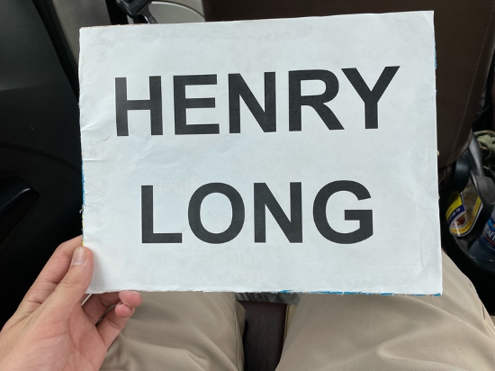
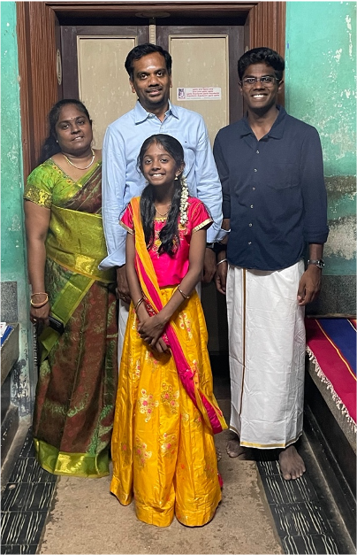

Introduction On Habitats On Conspicuity On Adolescence On Groups On Money On Logicstics On Pockets On Piety Appendix A: Glossary Appendix B: Varanasi Tour Roster Appendix C: Works Cited
I'm hosted with GitHub Pages
As I shuffled out of the Chennai airport and crossed the Red Sea of taxi drivers, my driver quickly identified me amongst the other Israelites fleeing Egypt. I was, after all, the only white person. My driver was a stout, thickly bearded Tamil man donning an untucked white Oxford button-down with a breast pocket, red and white vibhuti streaks on his forehead, and a knowing smile. He was carrying an 8½-by-11-inch paper sign with the words “HENRY LONG” typed in large sanserif capital letters. “Welcome to India,” he said in a thick Tamil accent. As he walked me over to his light blue 2012 Toyota Etios, I had no idea what I was to encounter—both in the ultimate and proximate sense.
 My driver’s “HENRY LONG” sign
What follows is a series of essays reflecting on my time in India. My friend, Muthuvignesh Meenakshisundaram (Muthu), was born in the Tamil Nadu region of India, and he travels there regularly to visit extended family. For the months of July and August, I stayed with Muthu’s family in Pattamangalam, a rural village in Tamil Nadu. During my stay, I traveled to temples, towns, and cities across Tamil Nadu. Muthu and I also visited the North Indian city of Varanasi for a one-week trip.
The following essays combine personal reflections, ethnographic observations, and philosophic ruminations in order to extrapolate broad ideas from parochial subjects. Many of the essays contain long digressions about cultural minutiae or stories about my time in India. By reflecting on my particular experiences in India, I hope to broach more elusive ideas about the human condition. I approach this endeavor with humility, knowing full well that I am a member of the laity when it comes to ethnography and philosophy.
My ethnography and philosophy will have a distinctly American flavor. American suburbia—with its manicured lawns, cookie-cutter houses, and Saturdays at the mall—has always been my cultural habitat. As a result, I was more attuned to the particular idiosyncrasies of Indian culture relative to American culture—and vice versa. My ethnography does not purport to be impartial and objective—any ethnography that does so is lying to itself. Rather, I will always see India from the west looking east. I must be candid about my subjective preference for American culture. My family, friends, and home are in America, and I am fluent in its linguistic and social tongue. My biases inevitably inform my ethnography and philosophy. Instead of considering this a weakness, I believe that it infuses richness and complexity into my ethnography.
In his book, Tamil, Indologist David Shulman explores the meaning of akam and puram in Tamil poetry. Shulman describes akam as a fertile inner landscape of feeling in an introspective poem and puram as the reflection of that inner landcape in the outer world. Appropriating Shulman’s language, my Indian experience was limited to the outer world of puram—I did not have the requisite language skills, cultural background, and religious conviction to experience the vivid inner life of akam. Muthu’s family, by so generously opening their home to me, opened a window for me to catch a glimpse of the inner landscape of akam. My India experience would have been far more superficial had Uma, Meenakshi, Muthu, and Harini not hosted me. I extend my utmost gratitude to all of them for their boundless hospitality. I would be remiss if I did not specifically acknowledge and thank my friend Muthu for all of his assistance with this project. Without his friendship, this project would have never been conceived. Without his help, this project would never have come to fruition.
 Muthu’s immediate family
Any ethnography—or philosophy for that matter—must sidestep two competing evils: falsity and banality. If observations are too general, they sacrifice accuracy. If observations are too specific, they sacrifice utility. A good ethnography must place a stake in the ground at the golden mean between the false and the banal. In the following essays, I paint Tamil and American culture with broad brushstrokes. Neither American nor Tamil culture is a monolith—to say otherwise would be naïve. But to prohibit generalization would be to throw every ethnography in the wastebin. We must not fail to see the forest for the trees. Every essay I wrote demanded a careful balancing act between the specific and the general, the accurate and the useful, and the individual and the culture.